reaktive fragmente
Ottavia
von Newid Rahimi, Florian Moser, Florian Huchthausen
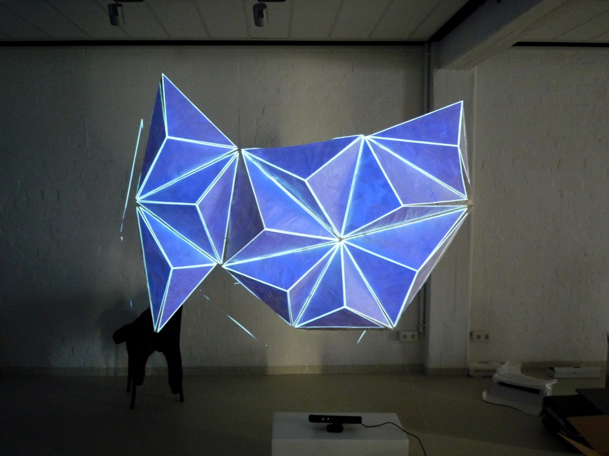
Die Konzeption unseres Projektes bezieht sich auf die Geschichte der Stadt Ottavia, eine der fragilen Städte. Die Idee ist aus verschiedensten Pyramiden, welche aus Papier gebaut werden, eine Struktur zu erzeugen. Das durch die zusammengefügten Pyramiden entstehende Netz von Kanten wird durch einen Beamer nachgezeichnet und die daraus resultierenden Flächen werden ebenfalls mittels Projektion farbig gefüllt.
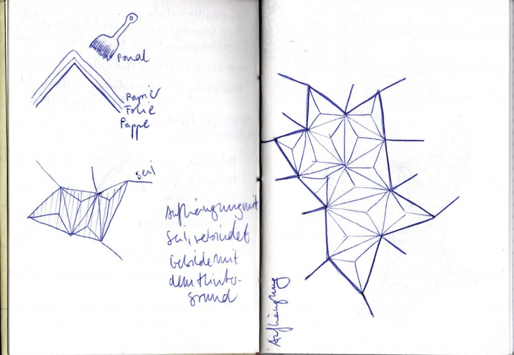
Als Gerüst für die Formen werden verschiedene Pyramiden aus Pappe angefertigt. Durch diese Technik werden die Pyramiden nach dem Austrocknen des Leims stabil und robust, wirken jedoch durch die Beschaffenheit des Materials leicht und fragil. Die fertigen Einzelteile werden von ihrem Pappgerüst gelöst und mittels Klebeband zusammengefügt.
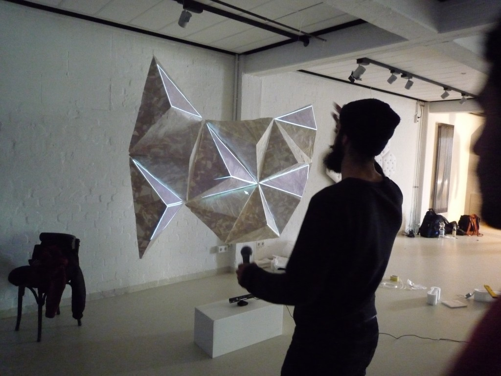
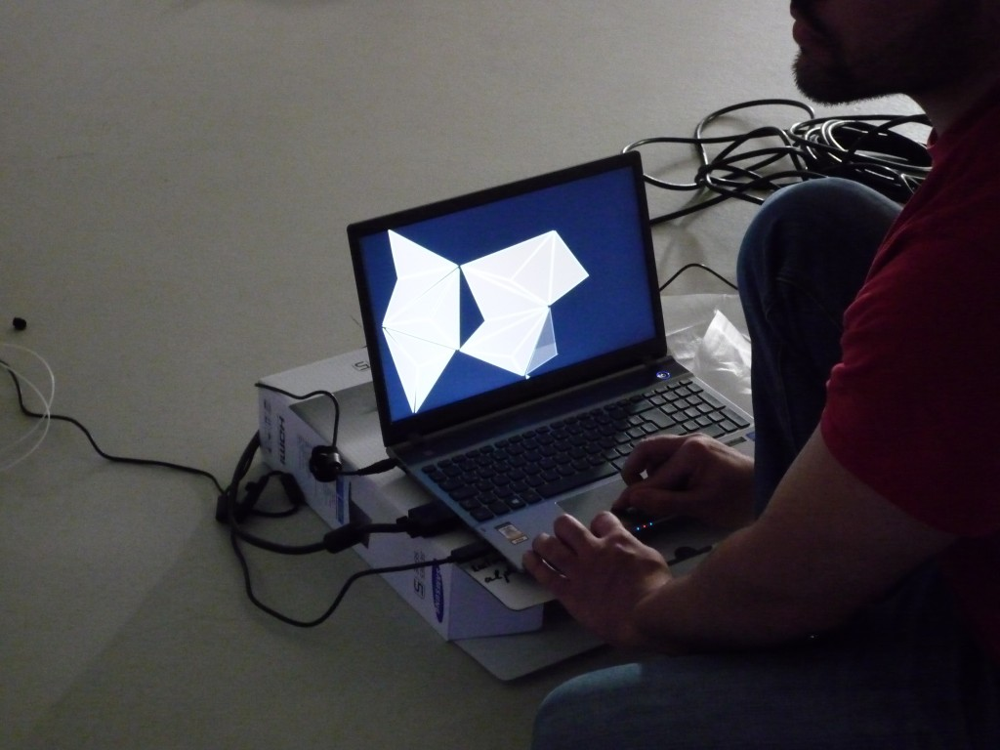
Die Interaktion mit dem Besucher findet durch die Verwendung einer Kinect statt. Der Besucher kann durch diese Technik an den Konturen ziehen, die die physischen Eigenschaften von Gummibändern besitzen. Durch unterschiedliche Geschwindigkeiten der Armbewegung erfolgt ein dementsprechend starker Zug an der Kontur. Auch die angrenzenden Flächen reagieren auf die Bewegung durch Farbveränderung.
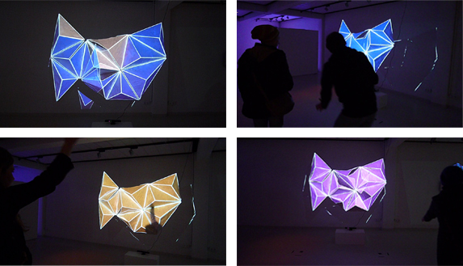
Zirma
Ein “City Trip”.
Von Joa Middelkoop, Marieke Linssen und Michael Zajonz
Kurzbeschreibung und Motivation
Eine Stadt, deren Existenz nur der Wiederholung einzelner, erinnerter Fragmente entspringt.
Inspiriert ist diese Installation von dem Buch “Die unsichtbaren Städte” des Autoren Italo Calvino, ganz konkret von der dort beschriebenen Stadt “Zirma”.
Eine konturarme Fläche erwacht zum Leben, sobald man sich ihr nähert und sie von einem zehren kann. Die gleichförmigen Elemente bilden einen reichen Nährboden für alles, was die Stadt ihrem Besucher entlockt, sie wächst zu einem bizarren Geflecht, welches auf eine eigeneartige Weise doch anziehend wirkt.
In Zirma geht es um Wiederholung dessen, was der Besucher hineinträgt. Deshalb bildet eine Fläche aus 10 gleichen Sechsecken die Grundlage dieser Installation. Auf einer Holzunterlage, mit Schaumstoff aufgepolstert und mit weißem Tuch bespannt findet die Projektion statt.
Die Projektion besteht im wesentlichen aus Kaleidoskop-Effekten, die die ihnen zur Verfügung gestellten Inhalte vervielfältigen und abstrahieren. Sie kann durch den Kinect-Sensor mittels Gesten beeinflusst werden, wie z.B. dem Heben der Hand oder einem Box-ähnlichen Ausstrecken und wieder Heranziehen einer Hand. Ein Laptop wertet zugehörige Sensor-Daten aus, berechnet den Kaleidoskop-Effekt und nimmt entsprechende Anpassungen an der Projektion vor:
Was die Stadt ist, bestimmt ihr Besucher – nur sollte er nicht glauben, er könne sie kontrollieren.
Projektionsfläche
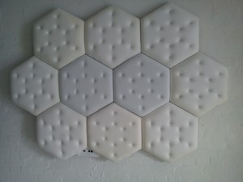Draufsicht der Projektionsfläche
Die Projektionsfläche erinnert an die Wände einer Gummizelle. Zirma ist ein komische Stadt, jedoch kaum zum Lachen komisch. Sie verstört, kann einen Wahnsinnig machen.
Wie weiter oben bereits erwähnt handelt es sich bei der Projektionsfläche um zehn gleiche Sechsecke. Ihre Grundlage bilden Holzplatten, auf einer Seite mit Schaumstoff aufgepolstert und einem weißen Tuch bespannt. Durch das Einarbeiten kleiner Knöpfe auf der gepolsterten Seite entsteht eine Kissen-Optik, die an die Wände einer Gummizelle erinnert.
Auf der Rückseite sind die Sechsecke miteinander verschraubt, die Gesamtkonstruktion wird durch einige Holzlatten stabilisiert. Aufgehängt wird die Installation an zwei Transparenten Schnüren, die an der Rückseite der Holzplatten eingehakt werden.
Projektion
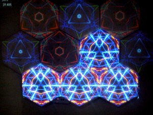
Die Interaktion mit der Projektion geschieht mittels einer Microsoft Kinect-Kamera. Sie erkennt die Anzahl der Personen, die sich vor der Projektionsfläche aufhalten und ihre Bewegungen. Hierzu gibt es eine Entfernungsbeschränkung, bis zu der hin Personen beachtet werden, um das Verhalten der Projektion örtlichen Gegebenheiten anpassen zu können.
Nach Aufbau der Installation muss die Projektion zunächst kalibriert werden. Dabei wird mittels Keystone-/Trapez-Korrektur zum einenen eine leichte Schräge der aufgehängten Installation und zum anderen die Neigung des Projektors kompensiert. Außerdem können die 10 einzelnen Teil-Projektionen für die Kaleidoskope unabhängig voneinander verschoben werden um ein genaueres Mapping zu ermöglichen.
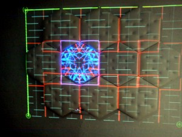
Befindet sich keine Person in der Nähe der Installation, verhält sie sich relativ unauffällig. Es flackern hin und wieder einzelne Sechsecke auf, ähnlich wie eine flackernde Neon-Lampe. Nähert sich eine Person der Installation, wird ein Kaleidoskop erzeugt. Die Kaleidoskope, die erzeugt werden, wenn sich Personen nähern, werden zufällig auf die einzelnen Sechsecke der Projektionsfläche verteilt, so dass sie vollständig ausgeleuchtet wird. Befinden sich z.B. drie Personen in der Nähe der Installation, so werden drei verschiedene Kaleidoskop-Projektionen zufällig auf die Sechsecke verteilt (dabei können sie also auch mehrfach auftauchen).
Das Kaleidoskop verwendet ein beliebiges Eingabebild zur Berechnung des Effekts, das Zentrum wird bei Erkennung einer Person immer Zufällig ausgewählt. Mit verschiedenen Gesten kann Einfluss auf die Projektion genommen werden, so dass die den jeweigen Personen zugeordneten Kaleidoskope ihre Plätze tauschen oder mit anderen Farben eingetönt werden.
Wie das alles am Ende ungefähr aussehen kann, entnimmt man am besten einem Video — oder man probiert es bei Gelegenheit aus. Es bleibt zu hoffen, dass hier bald noch Video-Material höherer Qualität erscheint.
Hier klicken um zum Video zu gelangen
.
Armilla oder die Stadt ohne Mauern
Lichtpunkte | Prof. Hübler, Prof. Klemke, Prof. Wendholt | WS 2012/2013 | Sebastian Bartels | Fabian Greve | Sören Koswig | Anton Romanov |
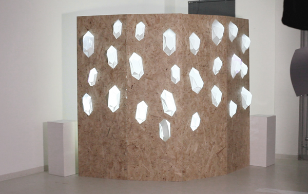
Konzept
Die konzeptionelle Grundlage der interaktiven Installation Armilla entspringt einer Geschichte von Italo Calvino mit dem Titel “Die fragilen Städte 3: Armilla”. Besonders interessiert uns an dieser Geschichte die Idee, etwas unter einer Oberfläche verborgenes offen zu legen. So wie der Autor dem Leser durch seine Erzählung die Möglichkeit gibt die Stadt ohne die Hülle der Wände wahrzunehmen, und darunter die Rohrleitungen gleich eines Adernetzes der Stadt sichtbar werden zu lassen, wollen wir dem Betrachter die Möglichkeit geben, durch seine physische Präsenz unter die Oberfläche zu schauen und einen Raum zum Forschen und Entdecken schaffen. Die Installation lädt ein, betrachtet zu werden, ohne direkt ihre Funktion zu offenbaren.
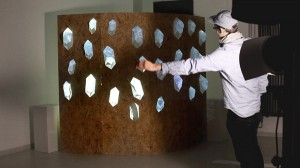Freilegung einer verdeckten Ebene durch den Schatten des Betrachters
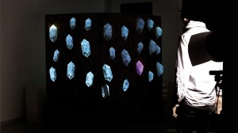komplette Freilegung der Körper durch den Schattenwurf des Betrachters
Idee
Die Grundidee, aus der sich Armilla entwickelt hat, ist das Prinzip der Freilegung eines Körpers. Daraus entwickelte sich der Gedanke, dass dies durch den Schatten des Betrachters geschehen könnte. Dafür koppeln wir einen digitalen Schatten der Kinect an einen real vorhandenen, der durch eine Lichtquelle vor der Stellwand erzeugt wird.
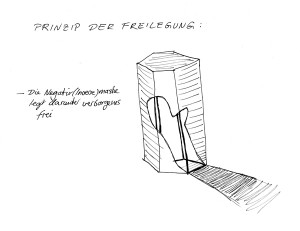Skizze zum Freilegungsprinzip
Zur Funktion
Armilla funktioniert mit einem Beamer, der versteckt hinter einer Stellwand steht und in einer Wand eingelassene transparente Objekte von hinten bestrahlt. Der Betrachter sieht sich einem Objekt gegenübergestellt, das auf den ersten Blick sehr massiv und statisch wirkt. Es wirkt als würden organische Wucherungen aus dem Objekt wachsen. Durch den Schatten aufgedeckt wird ihr wuchern sichtbar. Zeitweise zittern die Objekte, schwanken und wechseln ihre Farbe scheinbar wahllos. Beim Blick hinter das Objekt zerfällt der Schein, und der massive Eindruck weicht dem einer provisorischen Attrappe.Von vorne kommt im gleichen Winkel und Höhe wie der Beamer eine Lichtquelle (Baustrahler) und die Kinect, die dafür sorgt, dass der reale Schatten des Betrachters an den auf der anderen Seite geworfenen digitalen Schatten gekoppelt ist. Dieser wirkt wie eine Maske, welche die Erste von 2 übereinander liegenden Ebenen aufdeckt, und ein darunter laufendes Video
zum Vorschein bringt. Um eine Varianz der einzelnen Körper zu erreichen haben wir eine Sequenz mit unterschiedlichen Bildteilbereichen angelegt.
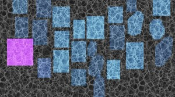Aftereffektsequenz mit variierenden Teilbereichen
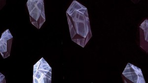halbtransparente Körper aus Konstruktionspapier
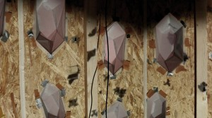Stellwandkonstruktion Rückseite
Zur Technik
Die Installation besteht neben der Stellwand mit den halbtransparenten Körpern aus einem Nahbereichsbeamer, einer Lichtquelle, einer Kinect und einem Rechner, auf dem ein in Processing programmiertes Java-Programm läuft, welches mithilfe von OpenNI das Bild der Kinect ausliest und über ein Video legt, welches mit der GSVideo-Bibliothek abgespielt wird. Die Lichtquelle dient dabei lediglich zur Verdeutlichung des Effektes, also um den physikalischen Schatten des Betrachters deutlich zu machen.
Valdrada oder die spiegelnde Stadt
von Julia Krüger, Melissa Wuttke und Lukas Grundmann
Motivation und Konzept
Die Stadt Valdrada liegt um einen großen ruhigen See. Dieser spiegelt sowohl die Stadt als auch die Bewohner. Keine Handlung der Bewohner bleibt dabei verborgen, sondern wird vom See wiedergegeben. Dabei ist wichtig zu beachten, dass die Spiegelung die Realität gerne ins Gegenteil verkehrt. So erscheinen wichtige Tatsachen unwichtig und umgekehrt.
Ziel der Arbeit ist es nun sich auf diesen “besonderen Spiegel” Valdradas zu beziehen. Die Kernidee besteht darin mit natürlichen / physikalischen Spiegeln zu arbeiten und mit Virtuellen. Während die physikalischen Spiegel den Betrachter unverändert wiedergeben, sollen die virtuellen Spiegel den Betrachter und seine Bewegungen manipuliert wiedergeben.
Umsetzung
Der Einsatz von physikalischen Spiegeln erweist sich im abgedunkelten Vorstellungsraum als schwierig. So fällt kaum vom Betrachter reflektiertes Licht auf die Spiegel. Aber stattdessen streuen sie das Licht des Beamers an die Wände, was interessante Lichtmuster an Wänden und Boden erzeugt.
Die virtuellen Spiegel werden durch PC, Beamer und dem Microsoft Kinect Kamerasystem realisiert.
Es gibt sechzehn virtuelle Spiegel, welche in einer einfachen 3D Szene angeordnet sind. Die Grundfläche sind zwei unterschiedlich große gleichmäßige Achtecke, die beide ineinander verschachtelt sind. Die Spiegel selber sind rechteckig und stehen vertikal auf den Kanten der Achtecke.
Jeder erfasster Betrachter wird von seinem Hintergrund getrennt und dann auf den virtuellen Spiegeln wiedergegeben. Alle Spiegel haben einen fast transparenten einfarbigen Hintergrund. Dabei ist die Farbe ganz unterschiedlich. Durch unterschiedliche Farbfilter treten die durch die Kamera erfassten Rot, Grün und Blau Werte des “gespiegelten” Betrachters in den Hintergrund und die Person nimmt eine bestimmte Farbe an. Dabei ist diese Vordergrundfarbe die hellere Komplementärfarbe zur Hintergrundfarbe. Dadurch wird die Kontur der wiedergegebenen Person hervorgehoben.
Die Kontur wird dabei in die Mitte des Spiegels verschoben. Letztendlich wird sie je nach Spiegel unterschiedlich stark horizontal verzerrt.
Jeder Spiegel gibt eine Person wieder. Bei mehreren Personen werden diese gleichmäßig auf die 16 Spiegel verteilt.
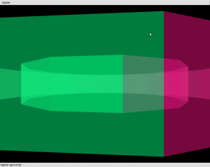3D Szenerie ohne erfassten Betrachter
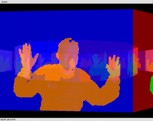Virtueller Spiegel ohne Verzerrung
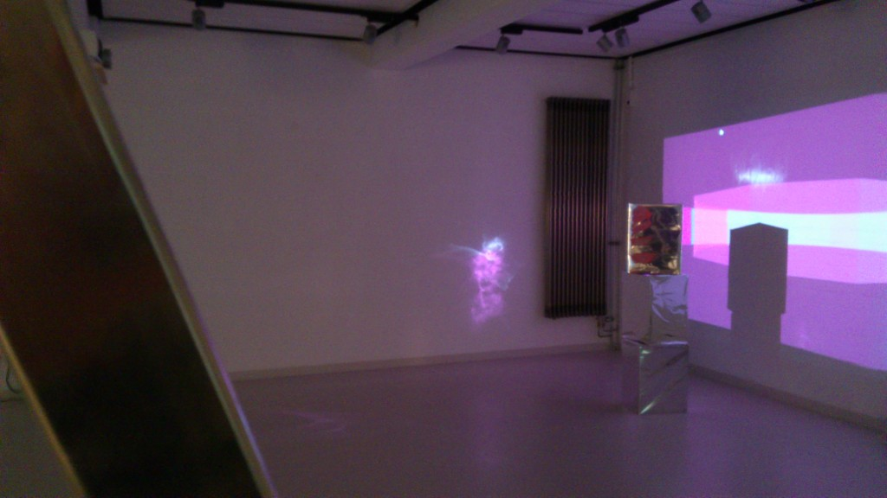Lichtmuster an Wänden und Boden
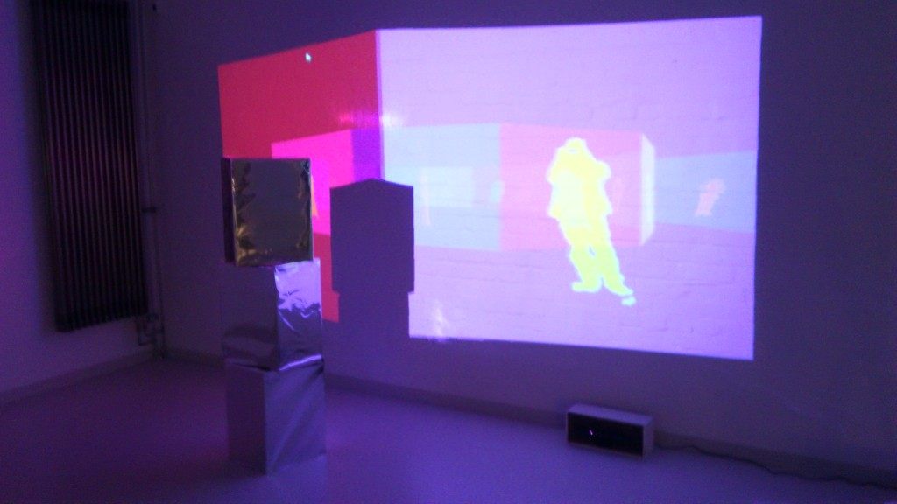Aufbau bei der Ausstellung
Technische Details der Umsetzung
Die Microsoft Kinect wird über OpenNI angesprochen, während die graphische Ausgabe unter Verwendung der Processing Java Bibliotheken erfolgt.
Der Java Code des Projekts lässt OpenNI die einzelnen RGB Bildpunkte den einzelnen Betrachtern zuordnen und kopiert danach die Bilddaten jeder Person in einen eigenen Bildpuffer. Diese Bildpuffer werden dann für die einzelnen virtuellen Spiegelflächen als OpenGL Texturen verwendet.
Verzerr- und Farbfilter laufen auf den Shadereinheiten der Grafikkarte ab. Das erlaubt (bei Verwendung aktueller Rechner), dass stets alle virtuelle Spiegel bei ordentlicher Framerate gerendert werden können.
Despina
von Christian Blank, Vassili Ekoutsidis, Max Byszio & Bengt Ott
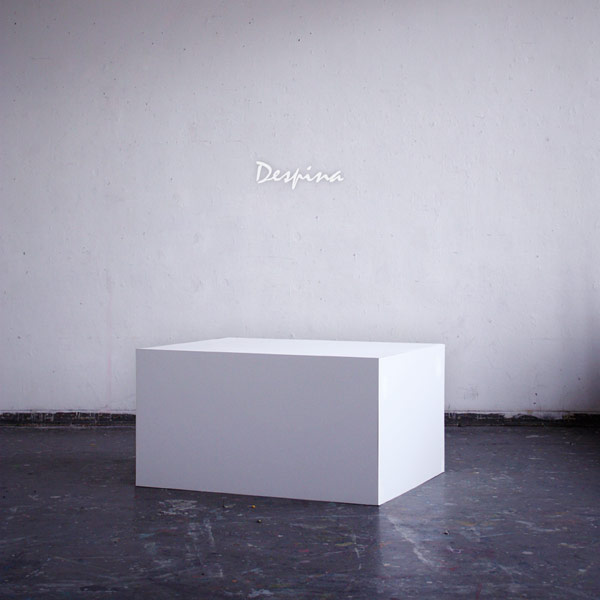
Einleitung
Die unsichtbaren Städte (ital. Original: Le città invisibili) ist der Titel eines 1972 erschienenen Buches von Italo Calvino. Es besteht aus 55 kurzen Texten. Jeder der 55 Texte skizziert mit knappen Worten eine dieser (fiktiven) Städte, die jeweils eine bestimmte geographische, historische, gesellschaftliche oder allgemein menschliche Situation in ein poetisches Bild fassen und jede mit einem Frauennamen benannt sind.
Kurzgeschichte – Despina
Konzept
Jede Stadt empfängt ihre Form von der Wüste, der sie sich entgegenstellt. Und so sehen der Kamelreiter und der Seemann Despina, die Stadt auf der Grenze zwischen 2 Wüsten. Denn von zwei Seiten erreicht man diese Stadt, mit dem Wüstenschiff von der einen und mit dem Segelschiff von der anderen. Diese zwei Elemente greifen wir in unserer Arbeit auf und simulieren Wasser und Wüste durch einen gespannten, elastischen Stoff, dessen Oberfläche eigenständig reagiert. Mehrere Fäden ziehen den Stoff an verschiedenen Stelllen punktuell herunter und ahmen die Wasserwüste nach. Die Reflexe sind das Echo der Stadt, die Umgebungsgeräusche werden über ein Großmembranmikrofon aufgenommen und von unserem Objekt wiedergegeben.
Demonstration
Despina Demo
Konstruktion
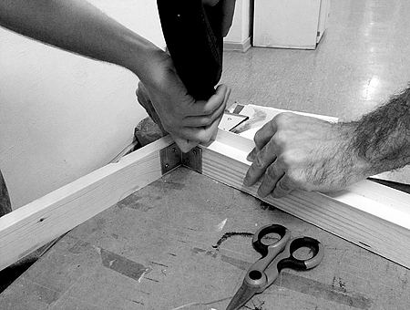
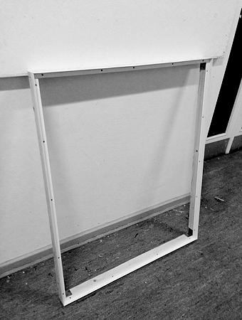
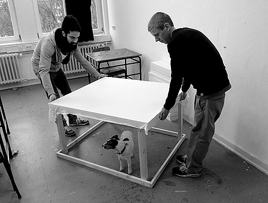
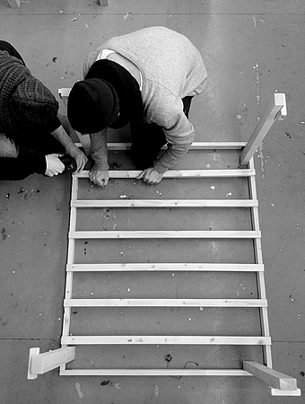
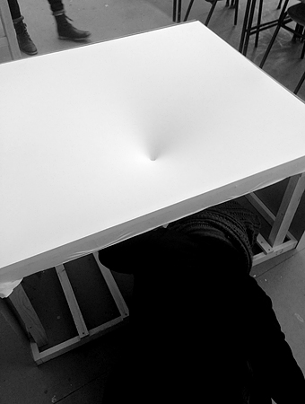
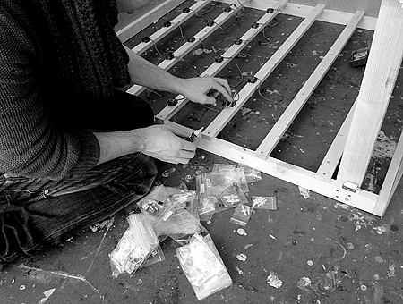
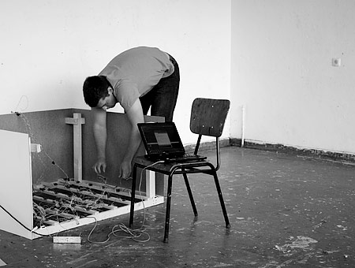
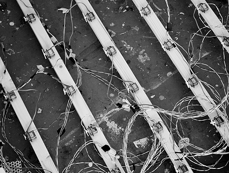
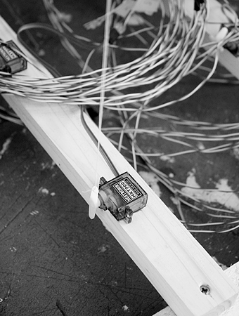
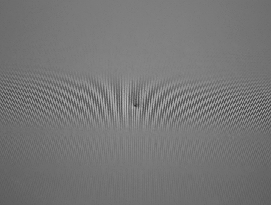
Technik
Die aufgenommenen Schallwellen werden mittels einer Fast-Fourier-Transformation quantifiziert und anschließend mittels einem selbst entwickelten Protokoll über die serielle Schnittstelle an ein Aduino MEGA weitergeleitet.
Das Arduino-Board ist über die digitalen Ausgänge mit den Servos verbunden und kann jeden Servo einzeln ansprechen. Für die Stromversorgung wurde ein Kabelbaum angefertigt, der alle Servos mit einer externen Stromquelle verbindet.
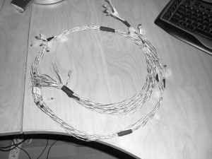
Das Arduino-Board wertet die empfangen Daten aus und steuert nacheinander die gewünschten Servos an.
Linienrauschen
Lichtpunkte | Prof. Hübler, Prof. Klemke, Prof. Wendholt | WS 2012/2013 | Christiana Benton | Joscha Machatzke | Stefanie Tamm |
Linienrauschen
Geschichte & Idee: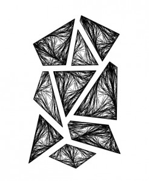
Die Stadt ‚Moriana’ lebt von ihrer Verschiedenartigkeit.
Einerseits besteht sie aus ästhetischer Schönheit mit Glas und Korallengestein, andererseits zeigt die Kehrseite vergänglichen Abfall.
Idee war es, diese grundverschiedenen Seiten in einem Gebilde zu vereinen. Die unbeeinflusste Projektion mit ihren ruhigen Bewegungen zeigt das Reine, Schöne und Unbefleckte, wohingegen man durch Interaktion das Vergängliche und Zerstörerische hervorrufen kann: die sich eben noch so sanft bewegenden Muster verfallen in eine Art unruhiges, willkürliches Schütteln.
Umsetzung:
Eine Holzplatte, aus der neun unterschiedlich große, geometrische Elemente ausgesägt sind dient als Fundament. Dieses ist mit einem weißen, dehnbaren Jersey bespannt, welcher die ausgesparten Formen im Gegenlicht sichtbar macht. Das Objekt ist schlicht und einfach und lebt von der Projektion und einer musikalischen Untermalung.
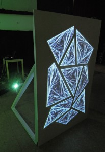
Technische Umsetzung:
Mit einem hinter der Platte installiertem Beamer werfen wir eine Projektion auf die neun Elemente. Die Projektion besteht aus verflochtenen Linienmustern, welche, so scheint es, sich aus sich selbst heraus, fast organisch bewegen und so eine ruhige Atmosphäre schaffen. Diese wird durch eine Noise Funktion (nach Ken Perlin) erzeugt, welche eine natürlichere, harmonische Zufallsfunktion darstellt. Durch hineindrücken in den Jersey Stoff kann der Betrachter so interaktiv eine eher unnatürlichere, hektischere Bewegung der einzelnen Flächen erzeugen – hervorgerufen durch eine „klassische“ Zufallsfunktion. Eine Kinect, welche sich ebenfalls hinter der Leinwand befindet, erkennt Mithilfe ihres Tiefensensors diese ‚Bewegung’. So kann abhängig vom Druck (bzw. der Tiefe) die Intensivität des „Befalls“ gesteuert werden. Desweiteren unterstreicht Musik das schöne, unberührte der Installation. Bei Interaktion wird ein Verzerreffekt aktiviert, wobei jede Fläche ihren eigenen Effekt besitzt. Werden mehrere Flächen gedrückt, überlagern sich die Effekte – der Sound wird verworrener und immer zerstörter. Die Kinect wird über die SimpleOpenNI Bibliothek angesprochen, die Logik des Programms mithilfe von Java und der Processing 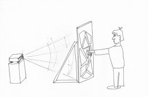Library realisiert.
Computationalspaces steht unter der Leitung von Prof. Dr. Birgit Wendholt und Prof. Franziska Hübler von der Hochschule für Angewandte Wissenschaften in Hamburg. Alle Rechte vorbehalten. Vervielfältigung nur mit Genehmigung. Layout/Inhaltsgestaltung: Marissa Kimmel und Programmierung/Inhaltsgestaltung: Adriane Künne.